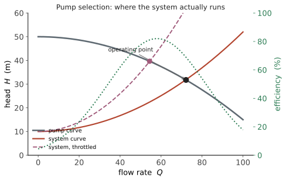

本页目录
传动 IV · 工程流体与泵风机要点
层次：本科核心的实用部分 ｜ 范围声明：本页只给机械工程师日常需要的工程流体要点（管路、泵、风机、液压）。完整的流体力学（N-S 方程、边界层理论、湍流模型、CFD）属于能源动力/流体力学方向，不在本站范围；物理站的流体与非线性线已覆盖连续介质、边界层、湍流和不稳定性，本页侧重泵、风机与管路选型。 机械系统中几乎总有流体：润滑油、冷却水、液压油、压缩空气、燃气。不必成为流体力学家，但必须会算阻力、选对泵、并理解几个反直觉的规律。
学习层：把泵曲线、系统曲线和汽蚀余量放在同一工作点
具体机械情境：给冷却水回路找可运行的泵点
冷却水回路有 \(H_{\mathrm{static}}=10\,\mathrm{m}\) 的静扬程，管路阻力随流量平方增加。泵在额定转速下的关阀扬程约为 \(50\,\mathrm{m}\)。选型工程师要找泵与系统的工作点，估计轴功率，并确认吸入口不会越过汽蚀边界；若系统阻力加大到没有正交点，实验必须把“无工作点”显示成可恢复的阻断，而不是偷偷给出负流量。
必须提交的预测
- 变频比 \(n=0.8\) 时，按相似定律轴功率比约为 \(0.8^3=0.512\)，还是 \(0.8^2=0.64\)？
- 系统稳定工作点应由泵曲线和系统曲线的交点决定，还是由泵的最高扬程单独决定？
- 当 \(\mathrm{NPSH}_a<\mathrm{NPSH}_r\) 时，泵应标为汽蚀风险还是安全运行？
正式模型：解析交点 + 透明效率/汽蚀代理
统一用 \(Q\) 的单位 \(\mathrm{m^3/h}\)、扬程 \(H\) 的单位 m。把 \(n\) 定义为相对于额定转速的无量纲转速比，泵曲线和系统曲线取
因此只要 \(H_0n^2>H_{\mathrm{static}}\)，正流量交点可解析求得
若分子不为正，就没有正的工作流量；实验将其显示为“无正交点，需降低静扬程/阻力或提高转速”的阻断。效率用一个明确的额定附近教学代理表示，例如 \(\eta=\operatorname{clip}(\eta_{\max}-c(Q_*-nQ_{\mathrm{BEP}})^2,0.35,0.90)\)，轴功率为
相似定律账本为 \(Q\propto n\)、\(H\propto n^2\)、\(P\propto n^3\)，这里只比较同一泵、同一介质、同源且近似同效率的额定附近对应点；含静扬程系统的实际交点功率不必按 \(n^3\) 变化。吸入侧用绝对压力计算
并用透明的教学需求代理 \(\mathrm{NPSH}_r=\mathrm{NPSH}_{r0}n^2[1+0.15\{Q_*/(nQ_{\mathrm{ref}})\}^2]\)；效率代理的 BEP 也随速度移到 \(nQ_{\mathrm{BEP}}\)。\(\mathrm{NPSH}_a-\mathrm{NPSH}_r\le0\) 就标为汽蚀边界/风险。默认值 \(H_0=50\,\mathrm{m}\)、\(k=0.008\)、\(H_{\mathrm{static}}=10\,\mathrm{m}\)、\(r=0.004\)、\(n=1\) 给出 \(Q_*=57.74\,\mathrm{m^3/h}\)、\(H_*=23.33\,\mathrm{m}\)。
误区与模型边界
- 泵曲线与系统曲线的交点是给定阀位和转速下的工作点；关小阀门会改系统曲线，变频会改泵曲线，二者能耗不能混为一谈。
- \(Q,H\) 的单位在本实验中固定为 \(\mathrm{m^3/h}\) 和 m；把 L/s 或压力 kPa 直接代入 \(kQ^2\) 会破坏量纲。
- 效率曲线、\(\mathrm{NPSH}_r\) 和阻力系数是透明教学代理，不是厂商泵图、全流场 CFD 或瞬态吸入系统的替代。
- 无正交点不是“流量取负”的许可证；它是一个可恢复阻断，必须调回 \(H_0n^2>H_{\mathrm{static}}\) 或改变 \(k+r\)。
- 相似定律的 \(Q\propto n\)、\(H\propto n^2\)、\(P\propto n^3\) 只比较同一泵、同一介质、同源且近似同效率的对应点；含静扬程的实际系统交点会移动，实际轴功率不必按 \(n^3\) 变化。汽蚀还受温度、溶解气体、吸入管瞬态和安装高度影响。
对应 lab 的静态 fallback
无 JavaScript 时仍可核对：默认 \(H_0=50.0\,\mathrm{m}\)、\(k=0.008\,\mathrm{m/(m^3/h)^2}\)、\(H_{\mathrm{static}}=10.0\,\mathrm{m}\)、\(r=0.004\,\mathrm{m/(m^3/h)^2}\)、\(n=1.00\)、\(\rho=1000\,\mathrm{kg/m^3}\)。
| 泵系统账本 | 默认读数 | 单位或判定 |
|---|---|---|
| 解析工作流量 \(Q_*\) | 57.74 | \(\mathrm{m^3/h}\) |
| 工作扬程 \(H_*\) | 23.33 | m |
| 教学效率代理 \(\eta\) | 0.811 | 无量纲 |
| 液压功率 / 轴功率 | 3.67 / 4.53 | kW；轴功率含效率代理 |
| \(\mathrm{NPSH}_a\) | 11.79 | m；绝对压力基准 |
| \(\mathrm{NPSH}_r\) / 裕量 | 3.60 / 8.19 | m；汽蚀筛查通过 |
| 相似定律 \(Q:H:P\)（\(n=0.8\)） | 0.800 : 0.640 : 0.512 | 相对额定值 |
脚本可用时，把 \(H_{\mathrm{static}}\) 调到高于 \(H_0n^2\) 会出现红色“无正交点”状态；再降低静扬程或提高转速即可恢复。揭示后调参不会重新锁回预测门。
迁移问题
如果冷却回路有两个并联支路、阀门正在缓慢关闭且液面温度上升，你会如何重新画系统曲线、更新瞬时 \(\mathrm{NPSH}_a\) 和检查水锤？请说明为什么静态交点不能单独保证过渡过程中的安全。
一、基本方程
连续性（不可压）：\(A_1v_1 = A_2v_2\) —— 管径缩小则流速升高。
伯努利方程（理想流体、沿流线）：
工程形式（加上损失与泵功）：
各项都以"米"为单位（称为压头/扬程），这是工程上最方便的记法——泵的性能直接用"扬程多少米"表示。
二、管路阻力：为什么是平方关系
沿程损失（Darcy–Weisbach）：
局部损失：\(h_j = \zeta\dfrac{v^2}{2g}\)（弯头、阀门、变径、进出口）。
核心结论：阻力与流速的平方成正比。
这个平方关系的工程后果极大：
- 在静扬程可忽略、阻力近似平方且效率近似不变时，流量加倍 → 动态阻力增大 4 倍 → 动态损失功率约增大 8 倍（功率 = 流量 × 压头）；含静扬程的系统要用完整系统曲线重新算轴功率；
- 管径的影响更剧烈：在固定 \(Q\)、且 Darcy 因子 \(\lambda\) 近似不变的粗略尺度下，\(v \propto 1/d^2\)，代入可得 \(h_f \propto d^{-5}\)。因此管径增大 15% 时，按这个近似阻力约降到一半；实际 \(\lambda\) 会随 Reynolds 数和粗糙度变化，不能把 \(d^{-5}\) 当成普适精确律；
- 所以"管子粗一号"往往比"泵大一号"更经济——这是管路设计的第一原则。初投资增加，但长期能耗大幅下降。
沿程阻力系数 \(\lambda\)：
- 层流（\(Re<2300\)）：\(\lambda = 64/Re\)，与粗糙度无关；
- 湍流：由 Moody 图或 Colebrook 公式给出，取决于 \(Re\) 与相对粗糙度；完全湍流区 \(\lambda\) 只取决于粗糙度。
局部损失常被低估：一个全开闸阀的阻力可能相当于几十倍管径的直管，而一个半开的阀门可达数百倍。弯头多的系统，局部损失往往超过沿程损失。
三、泵与风机的选型
核心工具：管路特性曲线 + 泵特性曲线

调节流量的两种方式，能耗差别巨大：
- 节流调节（关小阀门）：简单，但能量白白消耗在阀门上；
- 变频调速：对同一台相似泵、同一介质、相似工况且比较同效率附近的对应点，按相似定律有 \(Q\propto n\)、\(H\propto n^2\)、\(P\propto n^3\)。
\(P \propto n^3\) 是相似泵对应点的尺度关系：在上述条件下转速降到 80%，对应点的流量降到 80%、泵轴功率约降到 51%。含静扬程的实际系统工作点会同时移动，效率、阀位、管路损失和电机/变频器损失也会变化，不能把 51% 直接当成所有系统的实际节能律；现场节能应由系统曲线和实测功率核算（🔗 自动化站第十一、十二页：变频器与电机控制正是为此）。
气蚀（汽蚀）：泵入口压力低于液体饱和蒸气压时产生气泡，气泡在高压区溃灭产生冲击 → 叶轮点蚀、噪声、振动、性能下降。
判据：装置汽蚀余量应大于泵的必需汽蚀余量（\(\mathrm{NPSH}_a > \mathrm{NPSH}_r\)）；所需裕量不能通用写死为 0.5 m，应按泵厂商曲线、适用的 HI 标准、液体温度、流量、安装和风险等级确定。
对策：降低吸入管阻力、抬高液位、降低液温、泵尽量靠近液源。"泵装得太高"是气蚀最常见的原因。
四、液压传动
核心优势：功率密度极高——同样功率下，液压马达/缸的体积重量远小于电机。这就是挖掘机、压力机、飞机舵面用液压的原因。
帕斯卡原理：\(p = F/A\)，压力全系统传递。液压系统压力通常 10–35 MPa，故小缸径即可产生巨大推力。
关键特性与问题：
- 压力由负载决定，流量由泵决定——这是液压最容易被初学者搞反的一点。泵不产生压力，它产生流量；压力是负载"顶"出来的；
- 油液可压缩性与管路弹性造成刚度有限 → 液压伺服系统有液压固有频率，限制控制带宽（🔗 自动化站）；
- 污染是头号杀手：据业界普遍经验，液压故障中很大比例源于油液污染。过滤精度与清洁度等级是液压系统设计的核心指标；
- 发热：节流调速的能量全部变热，需要冷却器。负载敏感与变量泵系统是为节能而生。
气动：介质可压缩 → 刚度低、难以精确定位，但便宜、清洁、防爆、可过载。适合"到位即可"的动作（夹紧、推送），不适合精密位置控制。
五、流致振动与噪声
- 涡激振动：流体绕过钝体产生周期性涡脱落（斯特劳哈尔数 \(St = fd/v \approx 0.2\)）。当涡脱落频率接近结构固有频率时发生共振——换热器管束、烟囱、输电线的典型问题。对策是加扰流条、改变间距、增加阻尼；
- 水锤：阀门快速关闭时，流体动量突变产生压力冲击波，压力峰值可达工作压力的数倍，足以爆管。对策：延长阀门关闭时间、设置缓冲罐或安全阀；
- 管道脉动：往复泵/压缩机的脉动激励与管系声学模态耦合（承第九页）。
六、要点
- 阻力 \(\propto v^2\)；在固定 \(Q\)、Darcy 因子近似不变时才可粗略写成 \(h_f\propto d^{-5}\)——加大管径往往比加大泵更经济；
- 局部损失常被低估，阀门弯头多的系统它可能占主导；
- 工作点 = 泵曲线与管路曲线的交点；相似泵同效率对应点可用 \(P\propto n^3\) 做尺度估计，但含静扬程系统的实际节能需另算；
- 气蚀由入口压力不足引起，"泵装太高"是最常见原因；
- 液压中压力由负载决定、流量由泵决定；污染是头号杀手；
- 涡激振动与水锤是流体引起的典型机械事故。
线三结束。下一线转向一个更冷峻的主题：零件是怎么坏的。疲劳、断裂、公差与可靠性——这是把"设计"变成"能用十年的产品"的关键。